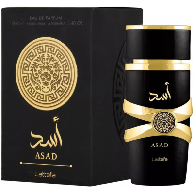
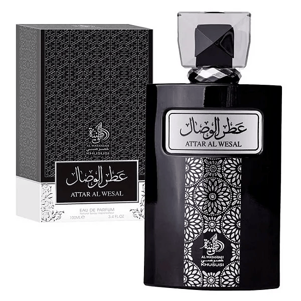

Perfume Árabes
Origem
A tradição de usar fragrâncias é milenar, com influências da Mesopotâmia e do Egito, onde óleos perfumados eram usados em rituais religiosos e na vida diária. A palavra "perfume" vem do latim "per-fumum", que significa "através da fumaça", referindo-se aos rituais de incenso.
Legados e Culturas
O perfume árabe tem raízes profundas na cultura, sendo usado para honrar convidados, em celebrações e como um símbolo de hospitalidade, além de ser valorizado por sua intensidade e fixação. Ingredientes como oud, âmbar e especiarias raras continuam sendo a base de muitas fragrâncias
Perfumes

Club de Nuit
A fragrância se inicia com um toque cítrico e frutado vibrante, especialmente do limão e abacaxi. A bétula, no coração, adiciona uma sensação esfumaçada e amadeirada. A base é aveludada e quente, com o toque cremoso da baunilha, terroso do patchouli e o toque ambarado do âmbar cinzento.
R$299,99
Lattafa Asad
fragrância ambarada e especiada com um perfil aromático complexo e marcante. Sua essência combina notas vibrantes e ousadas com uma base quente e sensual, resultando em um aroma intenso e sofisticado.
R$198,99
attar Al Wesal
A fragrância equilibra o frescor das notas de topo com a doçura e a intensidade da baunilha e do âmbar. É descrita como envolvente, sensual e marcante.